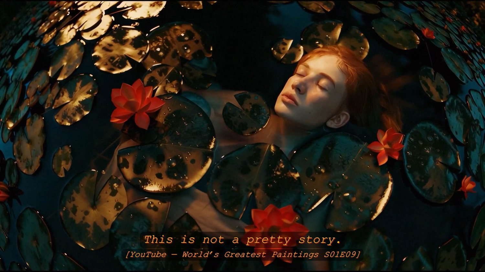
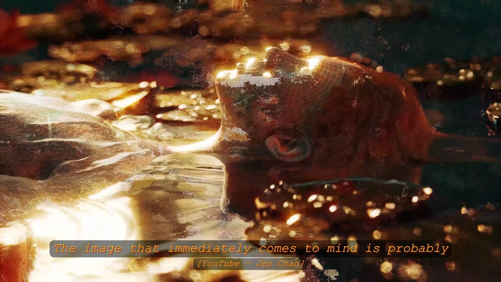
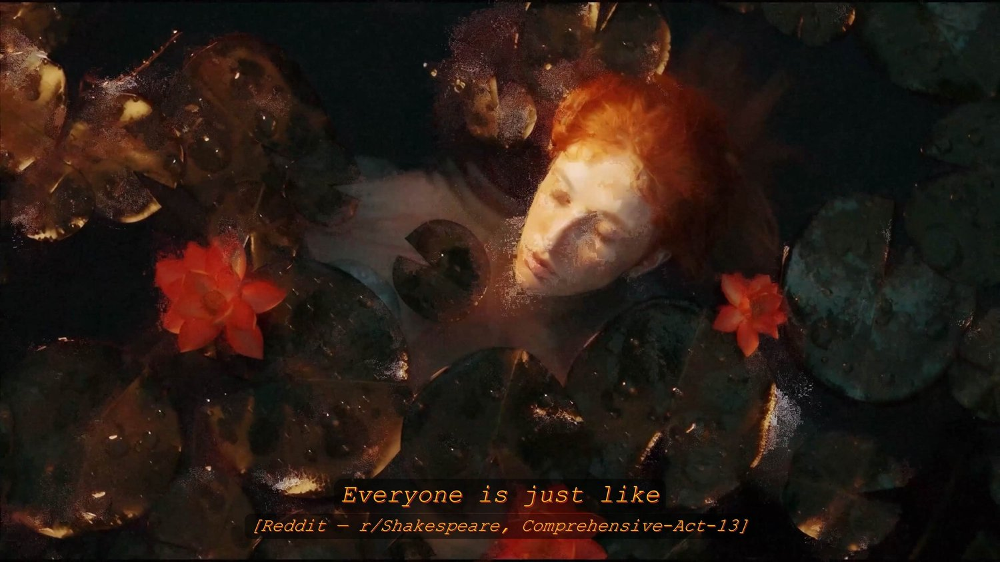
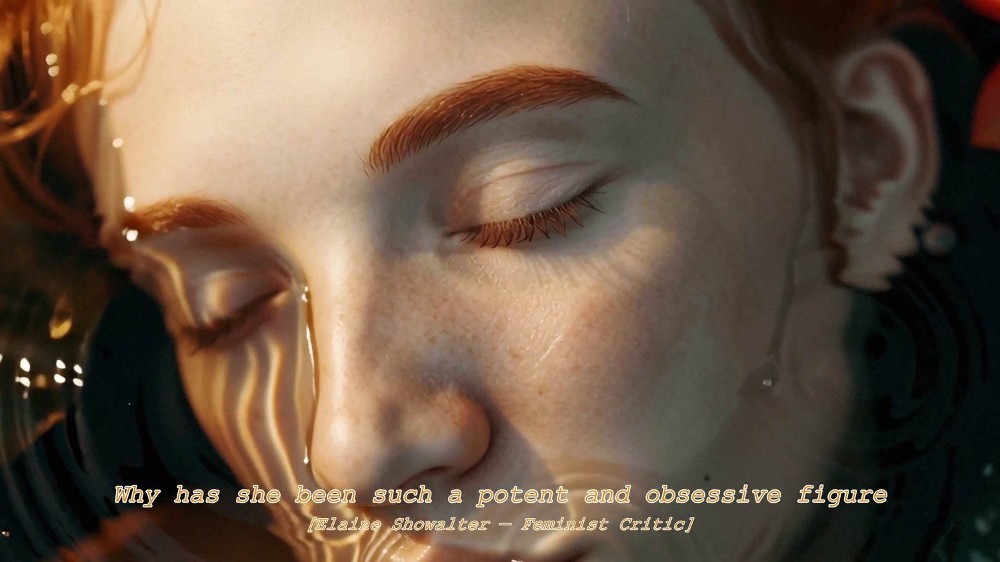

Ophelia, Retold · 2025
A body narrated until it becomes a system.




Ophelia, Retold text sources
- Shakespeare, Hamlet
- YouTube: World's Greatest Paintings S01 E09
- YouTube: Jen Chan
- YouTube: Dr Scott Masson
- Reddit r/Shakespeare (Comprehensive-Act-13)
- Elaine Showalter, Representing Ophelia: Women, Madness, and the Responsibilities of Feminist Criticism
- Christine Riding, John Everett Millais (Tate, 2006)
- Reddit r/ArtHistory (natalielynne)
A single-channel video made with 3D-rendered visuals and an AI-generated voice. Its source material moves between Hamlet, art-historical writing, YouTube commentary, Reddit conversations, and critical writing around Ophelia.
- Format
- Single-channel video
- Specs
- 4K, 3840 x 2160 · 16:9 · 1 min 17 sec loop · MP4